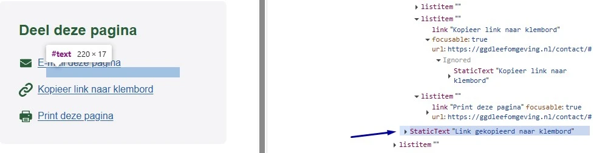
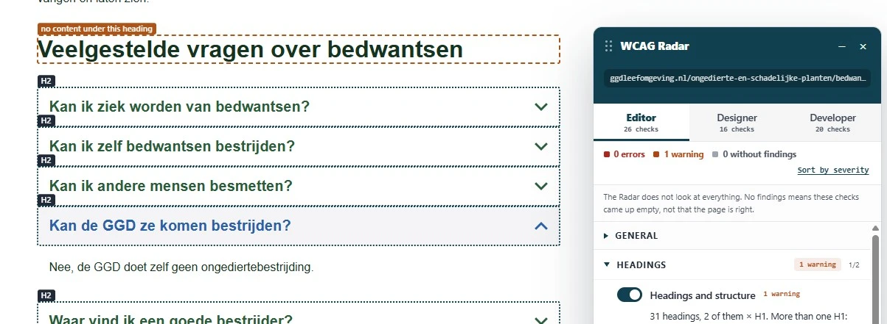
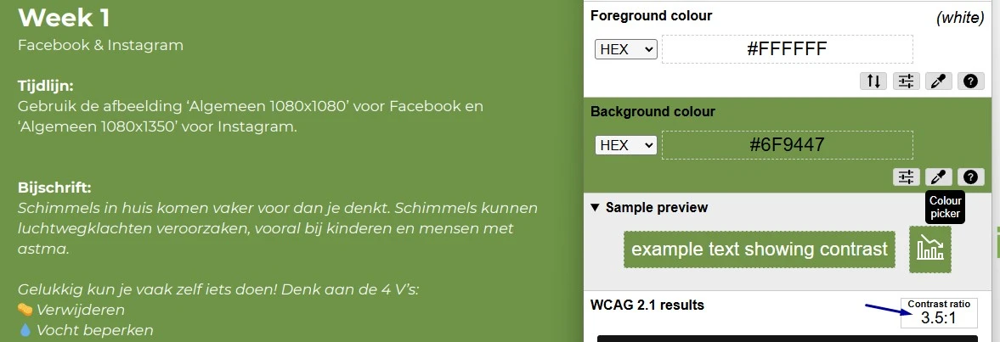

Content audit digitale toegankelijkheid van website ggdleefomgeving.nl
Samenvatting
Wij hebben de content van de website ggdleefomgeving.nl onderzocht in augustus en september 2026, in opdracht van GGD Leefomgeving. Op dit moment is een deel van de succescriteria als voldoende beoordeeld. In dit rapport lees je welke punten nog verbetering behoeven en hoe deze kunnen worden aangepakt.
Tijdens het onderzoek zagen we ook punten die over de techniek gaan, bijvoorbeeld bij de bediening met het toetsenbord. Die vallen buiten een contentonderzoek en staan daarom niet in dit rapport.
#1 - Verborgen tekst wordt voorgelezen door schermlezers
Impact: MatigType: ContentWCAG: 1.3.1EN: 9.1.3.1

Op pagina's met een blok "Deel deze pagina" of "Contact met je eigen GGD" staat tekst die voor ziende bezoekers verborgen is, maar die schermlezers wel voorlezen. De tekst "Link gekopieerd naar klembord" staat in de toegankelijkheidsboom terwijl de bezoeker nog niets heeft gedaan. Wie met een schermlezer leest, denkt daardoor dat er een link is gekopieerd terwijl dat niet zo is.
Tekst die niets zegt over de huidige situatie of over wat de bezoeker net deed, hoort niet bij hulpsoftware terecht te komen.
Ik lees de website met een schermlezer. Terwijl ik door de pagina navigeer, hoor ik "Link gekopieerd naar klembord" zonder dat ik snap waarom. Ik denk dan dat er een link is gekopieerd terwijl ik daar niets voor deed. Ik verwacht dat een schermlezer alleen meldt wat met mijn eigen handeling te maken heeft.
Hoe te testen
Bekijk de HTML en de toegankelijkheidsboom en controleer of de verborgen tekst bij hulpsoftware terechtkomt terwijl er niets is gekopieerd. Navigeer daarna met een schermlezer door de blokken "Deel deze pagina" en "Contact met je eigen GGD" en luister of tekst als "Link gekopieerd naar klembord" wordt voorgelezen terwijl die niet in beeld staat.
Oplossing
Geef de melding "Link gekopieerd naar klembord" pas door aan hulpsoftware als de link ook echt is gekopieerd. Presenteer de melding op dat moment als statusbericht, zodat een schermlezer hem voorleest zonder de bezoeker midden in de navigatie te onderbreken.
De kop "Over je omgeving en je gezondheid" staat op twee regels door een <br>-element in de kop. De tekst staat in één kopelement, dus wie met de H-toets langs de koppen navigeert, hoort één kop. Loop je met de pijltjestoetsen door de pagina, dan klinkt de kop als twee losse stukken.
Dit is een advies en geen afkeuring: navigeren met koppen werkt gewoon.
User story
Ik lees de website met een schermlezer. Als ik regel voor regel door de pagina ga, hoor ik een kop in twee stukken. Ik verwacht een kop als één geheel te horen.
Hoe te testen
Bekijk koppen die over meerdere regels staan in de HTML en kijk of het regeleinde met een <br>-element is gemaakt. Luister de kop daarna na met een schermlezer, zowel via de koppennavigatie als regel voor regel.
Oplossing
Haal het <br>-element uit de kop en regel met CSS waar de tekst afbreekt.
Op deze pagina staat het strong-element om tekst visueel te laten opvallen, terwijl de inhoud die nadruk niet nodig heeft. Zie de hele alinea "Op vrijdag 14 augustus … verontreinigd is."
Het strong-element betekent "belangrijk". Schermlezers kunnen hun toon voor zulke elementen aanpassen, waardoor woorden benadrukt klinken die dat niet zijn.
Ik lees de website met een schermlezer. Ik verwacht dat alleen woorden die echt belangrijk zijn een andere klemtoon krijgen.
Hoe te testen
Controleer de pagina als webredacteur en kijk naar alle vetgedrukte en cursieve woorden.
Vraag je per stukje vet of cursief af: is dit woord écht belangrijk, of zou je het in spraak benadrukken? Zo niet, dan hoort er geen strong of em omheen, maar CSS-opmaak.
Inspecteer de HTML: staat het woord in een <strong>- of <em>-element terwijl er geen inhoudelijke reden voor nadruk is, dan klopt de opmaak niet.
Voorbeelden van gebruik dat wel klopt: een waarschuwing ("verwijder dit nooit"), een kernbegrip bij een definitie, of een woord dat de betekenis van de zin verandert.
Oplossing
Gebruik strong en em alleen als een woord of zinsdeel echt belangrijk is, of in spraak benadrukt zou worden. Wil je tekst alleen visueel laten opvallen, gebruik dan CSS, bijvoorbeeld een eigen class-attribuut met font-weight: bold.
Boven de kop "Contact met de GGD" staat een lege link zonder tekst en zonder afbeelding. De link heeft daardoor geen toegankelijke naam. Wie met een schermlezer leest, hoort alleen "link" en weet niet waar die heen gaat.
User story
Ik lees de website met een schermlezer. Als ik langs de links op de pagina navigeer, hoor ik alleen "link" en verder niets. Ik verwacht dat elke link een duidelijke naam heeft, zodat ik weet waar die me brengt.
Hoe te testen
Open onze WCAG Radar en zet de optie "Toegankelijke naam" aan, of bekijk de link in het toegankelijkheidspaneel van DevTools. Elke link moet een naam hebben die het doel of de bestemming beschrijft. Luister het na met een schermlezer.
Oplossing
Is de link niet nodig, haal hem dan van de pagina. Blijft hij staan, geef hem dan een toegankelijke naam met linktekst, een aria-label of een andere passende techniek.
#5 - Kopstructuur klopt niet
Impact: MatigType: ContentWCAG: 1.3.1EN: 9.1.3.1

Op deze pagina volgt een kop van niveau 2 direct op een andere kop van hetzelfde niveau. Zie "Veelgestelde vragen over bedwantsen" en "Kan ik ziek worden van bedwantsen?".
Staan twee koppen van hetzelfde of een hoger niveau direct onder elkaar zonder inhoud ertussen, dan is minstens een van die koppen niet goed toegepast. Direct onder een h2 mag bijvoorbeeld een h3 of gewone inhoud volgen, maar niet opnieuw een h2 of een h1.
https://ggdleefomgeving.nl/zomer-en-hitte/gezondheidsklachten-door-hitte/, zie "Op warme dagen" en "Houd jezelf koel", "Welke klachten kun je krijgen door hitte?" en "Oververhitting", "Veelgestelde vragen over hitte" en "Waarom hebben ouderen en zieke mensen meer kans op klachten door hitte?";
Ik lees de website met een schermlezer. Als ik door de koppen navigeer, staan twee koppen van hetzelfde niveau direct onder elkaar zonder inhoud ertussen, waardoor ik denk dat er content ontbreekt. Ik verwacht dat elke kop een eigen stuk inhoud inleidt.
Hoe te testen
Open de WCAG Radar en zet de optie "Koppen en structuur" aan. Je ziet per kop het niveau, van h1 tot h6.
Inspecteer de pagina: staan er twee koppen van hetzelfde niveau direct onder elkaar zonder tekst ertussen? Of slaat de hiërarchie een niveau over, bijvoorbeeld een h2 direct gevolgd door een h4? Beide wijzen op een onjuiste koppenstructuur.
Oplossing
Pas de tekst en de kopniveaus aan, zodat de koppen de structuur van de inhoud weergeven.
Onder de kop "Vier Blijf-uit-de-zon-dag mee!" staat inhoud die er met vinkjes uitziet als een lijst, maar die niet met lijstelementen is opgemaakt. Een schermlezer herkent daardoor niet dat het een lijst is en kondigt het aantal items niet aan. Bezoekers die hulpsoftware gebruiken missen zo structuurinformatie die anderen wel zien.
User story
Ik lees de website met een schermlezer. Wanneer informatie is gepresenteerd als een lijst, moet ik deze structuur kunnen horen. Ik verwacht dat mijn schermlezer de structuur en het aantal items aankondigt.
Hoe te testen
Open onze WCAG Radar en zet de optie "Lijsten" aan. Content die er visueel als lijst uitziet maar niet zo is gemarkeerd, valt direct op. Luister daarna met een schermlezer: die moet de lijst en het aantal items aankondigen.
Oplossing
Markeer de opsomming met de juiste HTML-elementen: <ul> voor een ongeordende lijst of <ol> voor een geordende lijst. Gebruik <li> voor elk afzonderlijk item.
Onder de kop "Download de animaties of bekijk op YouTube" staan twee gegevenstabellen zonder de juiste opmaak. De eerste rij van beide tabellen is in beeld de kolomkop en de tekst staat vet met een strong-element, maar de cellen staan in de code als gewone <td>-cellen in plaats van kopcellen.
Een gegevenstabel heeft een koprij nodig die aan de datacellen is gekoppeld. Zonder die opmaak kan een schermlezer het verband tussen kop en cel niet doorgeven aan een blinde bezoeker.
User story
Ik lees de website met een schermlezer. Als mijn schermlezer een tabel voorleest, dan hoor ik alleen de inhoud van de cellen zonder context. Ik verwacht dat mijn schermlezer de kop bij elke cel voorleest.
Hoe te testen
Open onze WCAG Radar en zet de optie "Tabellen" aan, of inspecteer de eerste rij en de eerste kolom van de tabel in DevTools. Kopcellen moeten <th> gebruiken, geen <td> met vette opmaak. Controleer met een schermlezer of de koppen samen met de datacellen worden voorgelezen.
Oplossing
Gebruik <th>-elementen voor de kopcellen en <td>-elementen voor de gegevenscellen. Een minimale toegankelijke gegevenstabel ziet er zo uit:
Onder "Luchtvervuiling" staat een afbeelding met tekst erin. Bezoekers kunnen die tekst niet groter maken of aanpassen in lettertype en kleur, dus voor velen is die tekst niet te lezen.
Dezelfde bevinding geldt voor de afbeelding onder de kop "Fijnstof en ultrafijnstof".
User story
Ik vergroot tekst om die beter te kunnen lezen. Tekst in een afbeelding verandert niet mee als ik de tekstgrootte, het lettertype of de kleuren aanpas. Ik verwacht dat alle tekst op de pagina echte tekst is, zodat ik die naar mijn eigen behoefte kan instellen.
Hoe te testen
Selecteer alle tekst op de pagina met Command + A of Ctrl + A. Ziet iets eruit als tekst maar is het niet te selecteren, dan is het een afbeelding van tekst. Dat mag alleen bij een logo, bij tekst waarvan de vormgeving de betekenis draagt, en bij tekst in een foto of een label in een grafiek.
Oplossing
Zet deze tekst als gewone tekst op de pagina. Dan kunnen bezoekers de grootte, de kleur en het lettertype aanpassen zodat het voor hen leesbaar wordt.
#9 - Tekstcontrast in afbeelding
Impact: MatigType: ContentWCAG: 1.4.3EN: 9.1.4.3
Op deze pagina staat tekst in afbeeldingen met te weinig contrast met de achtergrond. In de afbeelding boven "Vervuilende stoffen" staat grijze tekst (#6C7684) op een blauwe achtergrond (#ABC7E9) met een contrastverhouding van 2,6:1. In de afbeelding onder "Fijnstof en ultrafijnstof" staat blauwe tekst (#6385AA) op wit, met een verhouding van 3,8:1.
User story
Ik heb een visuele beperking. Als ik tekst in een afbeelding lees, is die slecht zichtbaar door te weinig contrast met de achtergrond. Ik verwacht dat tekst in afbeeldingen duidelijk leesbaar is.
Hoe te testen
Open onze WCAG Radar en zet de optie "Contrast" aan. Voor tekst in een afbeelding meet je met de twee pipetten de kleur van de tekst en van de achtergrond. Het minimum is 4,5:1 voor gewone tekst en 3,0:1 voor grote tekst: 24 px of groter, of 18,7 px vetgedrukt.
Oplossing
Pas de afbeelding aan zodat de tekst genoeg contrast heeft met de achtergrond: minimaal 4,5:1 voor gewone tekst en 3,0:1 voor grote tekst. Gebruik bij voorkeur echte tekst in HTML en CSS in plaats van tekst in een afbeelding, dan is het contrast eenvoudig aan te passen.
#10 - Informatieve afbeelding heeft geen tekstalternatief
Onder de kop "Fijnstof en ultrafijnstof" staat een informatieve afbeelding zonder tekstalternatief. Een schermlezer kan die informatie niet voorlezen. Een informatieve afbeelding heeft een alt-tekst nodig die kort en precies vertelt wat er staat.
User story
Ik lees de website met een schermlezer. Wanneer mijn schermlezer een informatieve afbeelding zonder tekstalternatief tegenkomt, hoor ik niets. Ik verwacht dat de schermlezer me vertelt welke informatie de afbeelding overbrengt.
Hoe te testen
Open onze WCAG Radar en zet de optie "Afbeeldingen en alt-tekst" aan. Je ziet per afbeelding of er een tekstalternatief is en wat daar staat. Een informatieve afbeelding heeft een beschrijvend alt-attribuut nodig dat de betekenis overbrengt.
Oplossing
Voeg een beschrijvend alt-attribuut toe. Om herhaling te voorkomen mag die tekst niet gelijk zijn aan tekst die al op de pagina staat, bijvoorbeeld het onderschrift.
De afbeelding onder de kop "Fijnstof en ultrafijnstof" bevat grafische onderdelen met te weinig contrast tegen de kleuren ernaast. De lichtblauwe (#A0BBE9) doorgetrokken en gestippelde lijnen halen 2,0:1 tegen de witte achtergrond, en de blauwe en gele (#F4C487) cirkels halen 1,6:1 tegen de kleuren eromheen. Delen van de afbeelding zijn daardoor lastig te onderscheiden.
User story
Ik heb een visuele beperking. Als ik een afbeelding met lijnen en vlakken bekijk, zie ik de vormen niet goed omdat ze te weinig contrast hebben. Ik verwacht dat de onderdelen die de informatie dragen duidelijk zichtbaar zijn.
Hoe te testen
Zoek de betekenisvolle onderdelen in de afbeelding op: lijnen, vlakken, cirkels en iconen. Meet het contrast met de aangrenzende kleuren, met de pipetten in onze WCAG Radar of vanaf een schermafdruk met een contrastchecker. Onderdelen die nodig zijn om de afbeelding te begrijpen moeten minimaal 3,0:1 halen.
Oplossing
Zorg dat de onderdelen die nodig zijn om de afbeelding te begrijpen minimaal 3,0:1 contrast hebben met de kleuren ernaast. Pas de kleuren van de lijnen en de cirkels aan waar dat nodig is.
In de documenteigenschappen van dit PDF-document staat de taal op Engels (en). Dit klopt niet: het document is Nederlands. Schermlezers lezen de tekst nu voor met de uitspraakregels van het Engels, en dat is voor een blinde bezoeker al snel onbegrijpelijk.
User story
Mijn schermlezer leest het document met de uitspraakregels van de taal die ingesteld staat in de documenteigenschappen. Deze taal moet overeenkomen met de taal van het document. Anders gebruikt mijn schermlezer verkeerde uitspraakregels.
Hoe te testen
Open de PDF in Adobe Acrobat Pro en kijk bij Bestand, Eigenschappen, Geavanceerd, Leesopties, Taal: die moet zijn ingevuld en overeenkomen met de taal van het document. Controleer ook in de tagboom of de Document-tag een Lang-attribuut heeft. Luister het daarna na met NVDA of VoiceOver.
Oplossing
Verander de code in "nl".
#13 - Kleurcontrast van kleine tekst is te laag
Impact: MatigType: ContentWCAG: 1.4.3EN: 10.1.4.3

In dit PDF-document staat witte tekst op een groene achtergrond (#6F9447), bijvoorbeeld "Facebook & Instagram", "Tijdlijn:" en "Gebruik de afbeelding … Instagram.". De contrastverhouding is 3,5:1 en dat is te laag.
User story
Als bezoeker met slechtziendheid heb ik behoefte aan goed contrast. Zonder dat contrast kan ik de tekst niet goed lezen.
Hoe te testen
Meet het contrast op een schermafdruk van de pagina met de Colour Contrast Analyser. Het minimum is 4,5:1 voor gewone tekst en 3,0:1 voor grote tekst: 24 px of groter, of 18,7 px vetgedrukt. Vergeet tekst op een achtergrondafbeelding, watermerken en voetnoten niet.
Oplossing
Pas de tekstkleur of de achtergrondkleur aan zodat het contrast minimaal 4,5:1 is. Controleer de nieuwe combinatie op een schermafdruk voordat je de PDF publiceert.
#14 - Afbeeldingen bevatten tekst
Impact: MatigType: ContentWCAG: 1.4.5EN: 10.1.4.5
In dit PDF-document staan op pagina 1, 7, 8 en verder afbeeldingen met tekst erin. Een afbeelding hoort geen informatieve tekst te bevatten als die tekst ook als echte tekst kan worden weergegeven. Dat mag alleen als de vormgeving van de tekst de betekenis draagt, bijvoorbeeld in een logo, of als lettertype, grootte, kleur en achtergrond aanpasbaar zijn.
User story
Ik heb een visuele beperking. Als ik tekst in een afbeelding tegenkom, kan ik die niet groter maken of aanpassen. Ik verwacht dat tekst als echte tekst in de tags van het document staat, zodat ik het leesbaar kan maken.
Hoe te testen
Open de PDF in Adobe Acrobat Pro en selecteer alle tekst met Command + A of Ctrl + A. Alles wat eruitziet als tekst maar niet wordt geselecteerd, is een afbeelding van tekst. Controleer in de tagboom of het element een Figure is en geen tekst. Logo's, essentiële typografie, foto's en labels in een grafiek zijn vrijgesteld.
Oplossing
Zet deze tekst als gewone tekst in het document, op de pagina zelf, in plaats van in een afbeelding.
#15 - Informatieve afbeeldingen hebben geen alt-tekst
Impact: MatigType: ContentWCAG: 1.1.1EN: 10.1.1.1
In dit PDF-document staan informatieve afbeeldingen zonder tekstalternatief. Afbeeldingen die met de Figure-tag zijn geplaatst, horen altijd een beschrijving te hebben, want die tag is voor informatieve afbeeldingen bedoeld. Nu leest een schermlezer alleen "afbeelding" voor en missen bezoekers de inhoud.
User story
Ik lees de PDF met een schermlezer. Als ik een informatieve afbeelding tegenkom, dan hoor ik alleen "afbeelding" en mis ik de inhoud. Ik verwacht dat elke afbeelding een beschrijving heeft die de inhoud uitlegt.
Hoe te testen
Open de PDF in Adobe Acrobat Pro en bekijk de tagboom via Beeld, Tonen/verbergen, Navigatiedeelvensters, Tags. Elke informatieve afbeelding hoort een Figure-tag met een betekenisvol Alt-attribuut te hebben; een decoratieve afbeelding hoort als artefact gemarkeerd te staan, zodat hulpsoftware hem overslaat. Lees het document daarna met NVDA of VoiceOver.
Oplossing
Voeg een tekstalternatief toe aan deze informatieve afbeeldingen.
#16 - Bijna alle tekst staat in kop-tags
Impact: MatigType: ContentWCAG: 1.3.1EN: 10.1.3.1
In dit PDF-document staat bijna alle tekst in een kop-tag (H), ook tekst die geen kop is. De structuur in de tags komt daardoor niet overeen met wat er in beeld staat.
Een schermlezer gebruikt de tags om door een document te navigeren. Staat alle tekst als kop in de tags, dan zeggen de koppen niets meer over de opbouw en kan een blinde bezoeker het document niet doorbladeren op onderwerp.
User story
Ik lees het document met een schermlezer. Als ik via de koppen door het document navigeer, kom ik bij elk stuk tekst uit in plaats van bij de kopjes. Ik verwacht dat alleen echte koppen als kop in de tags staan.
Hoe te testen
Open de PDF in Adobe Acrobat Pro en bekijk de tagboom via Beeld, Tonen/verbergen, Navigatiedeelvensters, Tags. Vergelijk de tags met wat er in beeld staat: alleen tekst die in beeld een kop is, hoort in een H1 tot en met H6-tag te staan. Gewone tekst hoort in een P-tag.
Oplossing
Zet gewone tekst in P-tags en houd de kop-tags voor de teksten die in beeld ook een kop zijn. Zorg dat de kopniveaus de opbouw van het document volgen.
Over dit onderzoek
Leeswijzer
Onze rapporten zijn anders. Bij het bespreken van de gevonden problemen volgen wij niet de structuur van de norm, maar die van jouw website of app. Hierdoor kun je gewoon per pagina of scherm aan de slag gaan. Wel zo makkelijk! Je vindt verderop een overzicht van alle pagina’s met problemen.
We geven je bij elk gevonden issue een paar voorbeelden, maar niet een complete lijst. Controleer zelf of het probleem ook nog op andere plekken voorkomt. Zie het rapport als een leidraad.
Gebruikte norm
Dit onderzoek laat zien in hoeverre de website op dit moment voldoet aan WCAG 2.2, niveau A en AA. WCAG staat voor Web Content Accessibility Guidelines. Dit is de internationale norm voor digitale toegankelijkheid. De Europese norm EN 301 549 bevat alle eisen van WCAG op niveau A en AA.
In dit rapport hebben we korte beschrijvingen van de succescriteria uit de norm opgenomen, met een algemene uitleg erbij. Wil je ze helemaal lezen? Bekijk dan de documentatie van WCAG.
Gebruikte onderzoeksmethode
We gebruiken de onderzoeksmethode WCAG-EM van het W3C. Het proces ziet er als volgt uit:
vaststellen wat binnen en buiten scope valt
vaststellen welke technologieën zijn gebruikt
steekproef (sample) samenstellen
steekproef onderzoeken
gevonden issues beschrijven
Het grootste deel van het onderzoek doen we met de hand. Voor een deel van de toegankelijkheidseisen gebruiken we automatische tools als ondersteuning, zoals axe-core en Chrome Developer Tools.
Belangrijk om te weten
Dit rapport helpt je om de toegankelijkheid van je website te verbeteren. Maar let op: het is geen definitieve, volledige lijst van alle aanwezige toegankelijkheidsproblemen. Dat zit zo:
Het is een steekproef
Ten eerste is het onderzoek gebaseerd op een steekproef. Die is op een betrouwbare manier genomen, en de meeste problemen zullen daardoor zeker aan het licht komen. Toch kan een probleem net buiten de steekproef vallen. Bij een volgend onderzoek kan het wel ontdekt worden.
Op basis van falsificatie
We beoordelen vanuit het principe van falsificatie. Dat houdt in dat we proberen te bewijzen dat iets niet waar is, in plaats van te bevestigen dat het klopt. ‘Voldoet’ betekent daarom dat we geen reden hebben gevonden om een punt af te keuren. Maar als we later wél een reden vinden, kan het alsnog worden afgekeurd.
Voortschrijdend inzicht
Het komt voor dat de beoordeling van een succescriterium op detailniveau verandert. De norm beschrijft namelijk niet élk mogelijk scenario. Samen met andere onderzoeksbureaus overleggen we hoe we met bepaalde situaties omgaan. Zo kan iets dat nu wordt afgekeurd, soms bij een volgend onderzoek worden goedgekeurd en andersom.
Oplossen leidt tot nieuw probleem
Ten slotte kan het gebeuren dat bij het oplossen van een probleem onbedoeld een nieuw toegankelijkheidsprobleem ontstaat. Dat komt dan bij een volgend onderzoek pas naar voren.
Hoe werkt dit rapport?
Bevindingen bekijken en filteren
Alle gevonden toegankelijkheidsproblemen staan onder Gevonden problemen. Je kunt de bevindingen filteren op:
Impact (Groot, Medium, Klein, Advies) — hoe ernstig is het probleem voor de gebruiker?
Type (Content, Techniek) — moet de inhoud of de techniek worden aangepast?
Status (Open, Opgelost) — welke problemen zijn al verholpen?
Voortgang bijhouden
Je kunt je voortgang op twee manieren bijhouden:
CSV-export — exporteer alle bevindingen als CSV-bestand en laad het in een (online) spreadsheet om met je team samen te werken.
Jira-export — exporteer alle bevindingen als Jira-compatibel CSV-bestand. Importeer het via Jira > Issues > Import issues from CSV. Bevindingen worden aangemaakt als bugs met prioriteit op basis van impact.
Registreer in de browser — activeer deze optie om per bevinding bij te houden of het is opgelost. Je voortgang wordt opgeslagen in je browser. Niemand anders kan je resultaat zien. Let op: de voortgang is gekoppeld aan je browser. Als je een andere browser of een ander apparaat gebruikt, begint de telling opnieuw.
Plan van aanpak — download een geprioriteerd plan van aanpak om de gevonden problemen stap voor stap op te lossen. Dit is beschikbaar bij audits vanaf maart 2026.
Link naar een specifieke bevinding delen
Bij elke bevinding verschijnt een link-icoon wanneer je er met de muis overheen gaat. Klik op dit icoon om de directe link naar die bevinding te kopiëren. Je kunt deze link plakken in een e-mail of chatbericht, bijvoorbeeld om een vraag te stellen aan Proper Access over een specifiek punt.